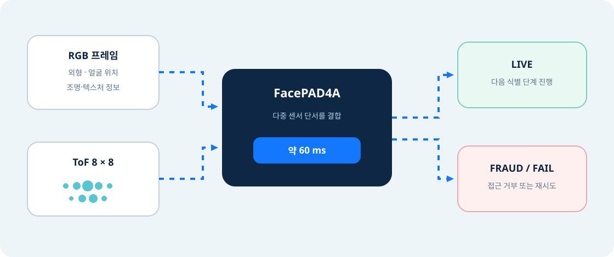

2D RGB만 볼 때
고해상도 사진이나 디스플레이 재생은 얼굴 외형을 상당히 비슷하게 보여줄 수 있습니다. 조명과 반사도도 결과에 영향을 줍니다.
05 · Technical guide
얼굴이 “누구와 닮았는가”에 앞서, 카메라 앞 대상이 실제 사람인지 확인하는 보안 단계입니다.
Security gate
PAD는 Presentation Attack Detection의 약자로, 인쇄 사진·화면 영상·마스크처럼 센서 앞에 제시되는 위변조 수단을 탐지하는 절차입니다.

고해상도 사진이나 디스플레이 재생은 얼굴 외형을 상당히 비슷하게 보여줄 수 있습니다. 조명과 반사도도 결과에 영향을 줍니다.
평면과 얼굴의 거리 구조 차이 같은 3D 단서를 추가할 수 있습니다. 8×8은 64개 측정 영역을 뜻하며 얼굴의 고해상도 depth image와는 다릅니다.
Interpret correctly
ST case study는 liveness detection(PAD) 결과를 60 ms로 제시합니다.
공격 유형별 오류율, FAR/FRR, 거리·각도·조도 범위, threshold, 반복 횟수 등 상세 benchmark 조건은 해당 요약 자료에 제시되지 않았습니다.
ToF와 PAD는 공격 저항성을 높이는 방어 계층입니다. 모든 위변조를 100% 차단한다는 의미는 아닙니다.